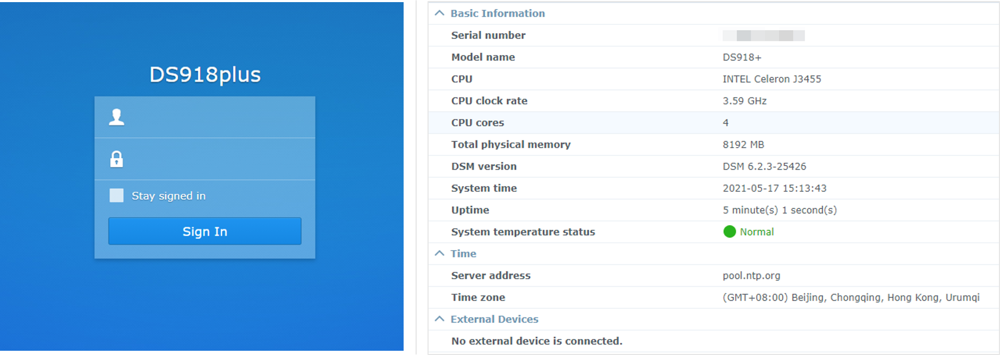

前言
之前花过一段时间研究群晖的NAS设备，并发现了一些安全问题，同时该研究内容入选了安全会议POC2019和HITB2021AMS。网上关于群晖NAS设备安全研究的公开资料并不多，因此基于议题《Bug Hunting in Synology NAS》和《A Journey into Synology NAS》，将之前的一些内容展开，如果有对群晖NAS设备感兴趣的同学，希望对你们有所帮助。
本系列文章的目的是介绍一些关于群晖NAS设备的基本信息、请求处理的相关机制和常见攻击面等，以及实际发现的部分安全问题，让读者对群晖NAS设备有个大体的认识，并知道如何去对设备进行安全分析，而不会聚焦于某个具体漏洞的利用细节。本系列文章大概会分为以下几个部分：
- 群晖环境搭建
- 自定义服务分析，包括
findhostd和iscsi_snapshot_comm_core HTTP请求处理流程，和常见的攻击面分析
群晖NAS介绍
NAS (Network Attached Storage)，即网络附属存储，是一种特殊的数据存储设备，包含一些必要的器件如RAID、磁盘驱动器或可移动的存储介质，和内嵌的操作系统，用于将分布、独立的数据整合并集中管理，同时提供远程访问、共享、备份等功能。简单地可以理解为”联网的磁盘阵列”，并同时具备硬盘存储和网盘存储的优势。
群晖是一家致力于提供网络存储服务器(NAS)服务的公司，被认为是中小企业和家庭NAS领域的长期领导者。群晖NAS的主要产品线包括DiskStation、FlashStation和RackSation，其中DiskStation是适合我们日常使用的桌面型号。针对每个产品线，都提供了不同的系列来满足不同的要求。
此外，群晖还提供了适用于每一个NAS的操作系统DiskStation Manager (DSM)。它是一个基于Linux的、网页界面直观的操作系统，提供了丰富的功能包括文件共享、文件同步和数据备份等，以在各个方面提供更好的灵活性和可用性。
环境搭建
在了解了群晖NAS的基本信息后，需要有一个目标设备来进行测试。目前，常见的有两种方式，如下。
- 直接购买一个群晖
NAS设备，即”白群晖”，其功能完整，比较方便配置和使用 - 组装一个设备，或购买一个厂商的
NAS设备，并安装群晖的DSM系统，即”黑群晖”，其拥有大部分的功能，对于测试而言是足够的
除了上述两种方式，NAS社区还提供了另一种方式，即创建一个群晖虚拟机。这种方式更适合于测试用途(比如想测试不同的DSM版本)，因此下面主要对这种方式进行介绍。
这里仅是出于安全研究的目的，如果有实际使用需要，建议购买群晖官方
NAS设备。
安装DSM 6.2.1
创建一个群晖虚拟机，主要需要如下两个文件。目前社区提供了针对不同NAS型号和不同DSM版本的loader，最新的loader版本适用于DSM 6.2.1，注意在安装时最好选择和loader对应的NAS型号及DSM版本。经测试，ds918系列的loader支持升级到DSM 6.2.3，即可以在先安装DSM 6.2.1版本后再手动升级到DSM 6.2.3。
- 群晖官方提供的
DSM文件(pat文件) - 社区提供的loader
关于
loader是否可以升级以及是否成功升级等信息可参考这里
以VMware Workspace为例，创建群晖虚拟机需要先加载synoboot引导，再安装对应的DSM。由于下载的引导文件为img格式，这里可以先将其转换为vmdk格式，方式如下。
使用软件
StarWind Converter进行转换使用
qemu-img命令进行转换1
qemu-img convert -f raw -O vmdk synoboot.img synoboot.vmdk
之后正常创建VMware虚拟机，并使用之前转换得到的vmdk文件。其中，在选择安装引导的磁盘类型时，一定要选择SATA类型，选择SCSI的话可能会造成后续引导无法识别或启动。创建完毕后，再正常添加额外的硬盘，用于数据存储。启动虚拟机后，通过Web Assistant或Synology Assistant进行安装和配置，完成之后就可以通过浏览器成功访问NAS虚拟机了。

Synology Assistant是一个客户端软件，用于在局域网内搜索和管理对应的NAS设备。
之后，可以通过手动更新的方式将其升级到DSM 6.2.3版本。前面提到过，通过这种方式只能得到DSM 6.2.3版本的虚拟机，而目前群晖DSM的最新版本包括DSM 6.2.4和DSM 7.0，无法通过这种方式安装。不过，可以基于刚创建的NAS虚拟机，借助群晖提供的Virtual Machine Manager套件来安装DSM 6.2.4或DSM 7.0版本的虚拟机。
安装DSM 6.2.4/DSM 7.0
群晖套件Virtual Machine Manager，通过一个集中且规范的接口集成了多种虚拟化解决方案，可以让用户在NAS上轻松创建、运行和管理多台虚拟机，当然也包括群晖的虚拟DSM。
简单而言，可以先创建一个DSM 6.2.3版本的虚拟机，然后在该虚拟机内部，借助Virtual Machine Manager套件再安装一个或多个virtual DSM。其中，在安装virtual DSM时，需要保证对应的存储空间格式为Brtfs，可以通过额外添加一个硬盘(容量尽量大一点，比如40G或以上)的方式，新增加存储空间时选择SHR(Brtfs)即可。另外，一个Virtual Machine Manager里面似乎只提供了一个Virtual DSM的免费License，因此如果安装了多个Virtual DSM的话，多个虚拟实例无法同时启动。这里通过切换虚拟实例的方式来避免这一问题，对于安全测试而言足够了。
由于目前
DSM 7.0还在测试阶段，一些功能或特性不是特别稳定或成熟，因此本系列文章还是以DSM 6.1/DSM6.2版本为主。
群晖在线Demo
群晖官方也提供了供在线体验的DSM实例，包括DSM 6.2.4和DSM 7.0版本。当然，你也可以基于该坏境去进行安全分析与测试，不过可能会有一些限制比如无法使用SSH访问shell等，或者其他顾虑等等。
工具安装
群晖NAS上提供了SSH功能，开启后可以访问底层Linux shell，便于后续的调试与分析等。此外，群晖还提供了一个名为Diagnosis Tool的套件，其包含很多工具，如gdb和gdbserver等，便于对程序进行调试。通常，可以通过套件中心搜索并安装该套件，如果在套件中心中无法找到该套件的话，可以通过在shell命令行采用命令synogear install进行安装，如下。
1 | sudo -i # 切换到root用户 |
设备指纹
群晖NAS主要是用在远程访问的场景下，此时唯一的入口是通过5000/http(5001/https)进行访问(暂不考虑使用QuickConnect或其他代理的情形)。使用设备搜索引擎如shodan查找暴露在公网上的设备，如下。可以看到，确实只有少量的端口可以访问。
为了进一步地知道目标设备的DSM版本、安装的套件和对应的版本等信息，需要获取更精细的设备指纹。通过分析，发现在index页面中存在对应的线索。具体地，index页面中存在一些css链接，表明有哪些内置的模块和安装的第三方套件。同时，其中也包含一些NAS特有的脚本链接。根据上述信息，可以构建一些query用于更准确地查找群晖NAS设备。
1 | Port: 5000/5001 # default |
另外，在每个链接后面还有一个参数v，其表示最后更改时间的时间戳，即对应构建时的时间戳。以如下链接为例，时间戳1589235146可转换为时间2020-05-12 06:12:26。通过在群晖镜像仓库中查找各DSM版本发布的时间，可以推测该DSM版本为6.2.3-25426。类似地，AudioStation套件的版本为6.5.6-3377。
1 | webapi/entry.cgi?api=SYNO.Core.Desktop.SessionData&version=1&method=getjs&SynoToken=&v=1589235146 |
同时，默认访问index页面时还会发送其他请求，其中请求/webapi/entry.cgi?api=SYNO.Core.Desktop.Defs&version=1&method=getjs&v=1589235146的响应中包含设备的具体型号信息，示例如下。根据upnpmodelname和unique等字段，可知设备的型号为DS1517。
1 | _SYNOINFODEF = { |
进一步地，可以通过访问http://<host>:<port>/ssdp/desc-DSM-eth0.xml, 获取设备的具体型号、版本以及序列号等信息。需要说明的是，针对某些有多块网卡的设备如DS1517，访问/ssdp/desc-DSM-eth0.xml可能会提示页面不存在，这是因为设备的eth0网口未连通，可以尝试将eth0换成eth1、eth2或eth3等后再尝试。
通常，设备搜索引擎只会探测
http://<host>:<port>/下的默认页面，对于该二级页面没有进行探测。
1 | <deviceType>urn:schemas-upnp-org:device:Basic:1</deviceType> |
相关事件/研究
近年来，有一些关于群晖的安全事件，其中包括：
- 在
2018年的GeekPwn比赛中，来自长亭科技的安全研究员攻破了群晖DS115j型号NAS设备，成功获取了设备上的root权限； - 在
Pwn2Own Tokyo 2020比赛中，有2个团队攻破了群晖DS418Play型号NAS设备，均成功拿到了设备上的root shell。
同时，也有一些安全研究人员对群晖设备进行了分析，感兴趣的可以看看。
- Network Attached Security: Attacking a Synology NAS
- SOHOpelessly Broken 2.0 - Security Vulnerabilities in Network Accessible Services
- Vulnerability Spotlight: Multiple vulnerabilities in Synology SRM (Synology Router Manager)
- Vulnerability Spotlight: Multiple vulnerabilities in Synology DiskStation Manager
小结
本文首先对群晖NAS进行了简单介绍，然后给出了如何搭建群晖NAS环境的方法，为后续的安全分析做准备。同时，对设备指纹进行了简单讨论，并介绍了与群晖NAS相关的一些安全事件/安全研究等。后续文章将对群晖NAS设备上的部分服务、功能或套件等进行分析，并分享一些实际发现的安全问题。
相关链接
- DSM 6.1.x Loader
- 各版本引导下载
- 群晖镜像/套件下载
- Bug Hunting in Synology NAS
- A Journey into Synology NAS
本文首发于安全客，文章链接：https://www.anquanke.com/post/id/251883